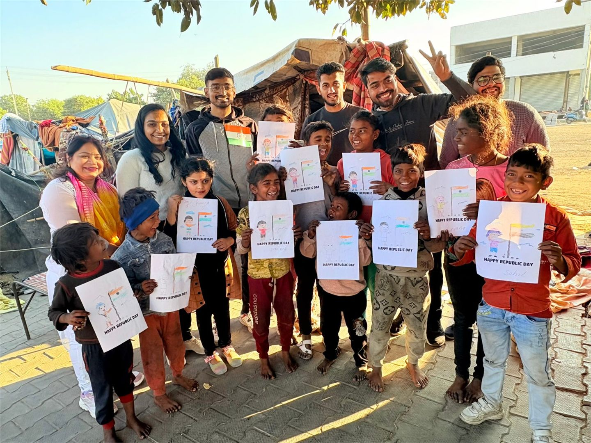
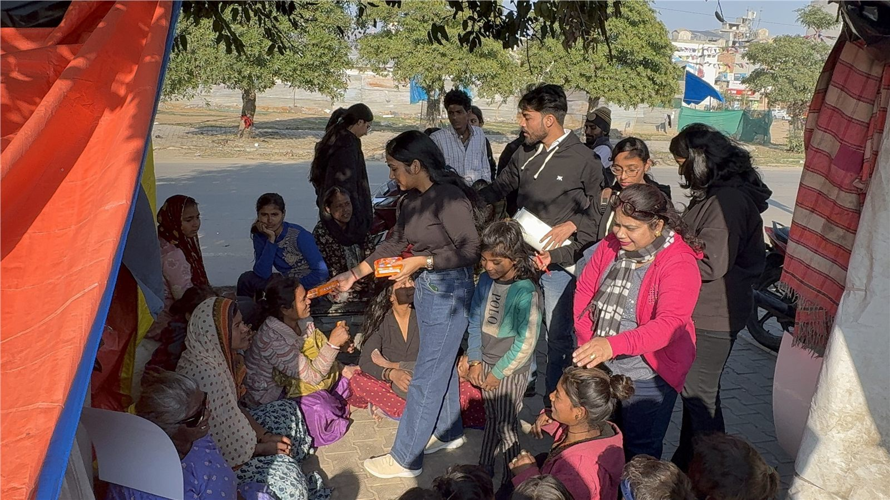
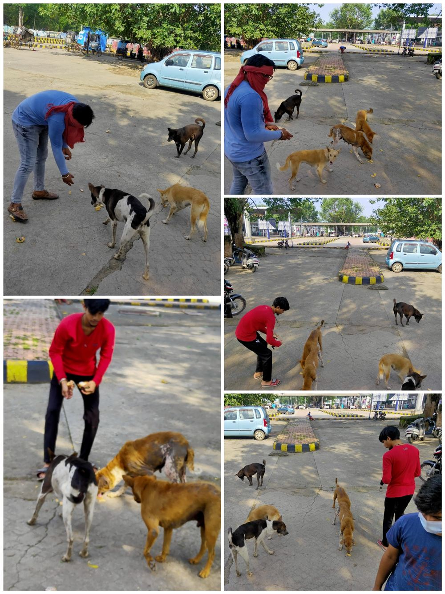
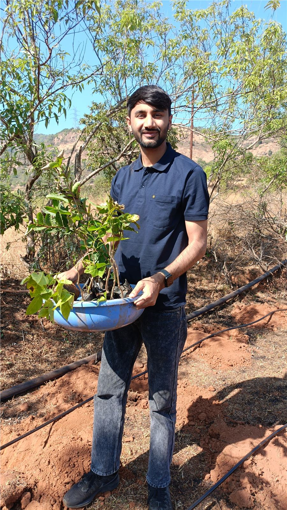
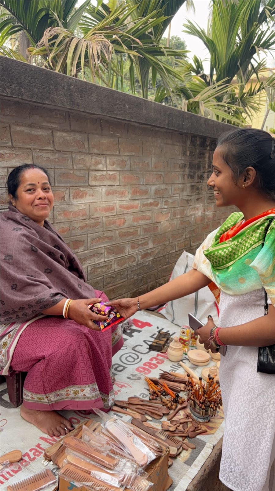
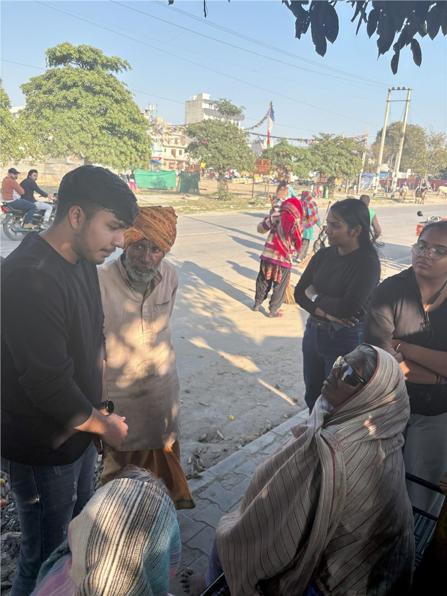

Respond with care
Food, clothing, animal care, and community outreach meet urgent needs with dignity.
Section 8 non-profit · Est. 2020
InAmigos Foundation brings volunteers, communities, and partners together to turn compassion into practical action across India.

01 · Who we are
Founded on September 23, 2020 by Govind Shukla, InAmigos Foundation is based in Chhattisgarh and works across India. Its initiatives combine immediate community support with education, skills, dignity, and environmental responsibility.
The foundation is registered under Section 8 and reports 80G, 12A, CSR-1, NGO Darpan–NITI Aayog, and IAF ISO 9001:2015 credentials.
Food, clothing, animal care, and community outreach meet urgent needs with dignity.
Education, internships, and practical skills create pathways toward long-term independence.
Volunteers and local communities shape action that is collaborative and grounded.
02 · Impact in numbers
Reported outcomes from the foundation's official About page and project updates.
Figures are organization-reported and were reviewed in July 2026.
03 · Ongoing projects
Each project responds to a different need, while every project works toward a more inclusive and sustainable society.
Provides food and clothing to underserved communities and encourages service-led actions such as blood donation.
Purpose: relief with dignitySupports children's education through school learning, digital literacy, life skills, workshops, and volunteer mentorship.
Purpose: opportunity through learningFeeds and protects stray animals while supporting rescue, medical care, temporary shelter, and humane treatment.
Purpose: compassion for every lifeWorks with women and self-help groups on practical skills, entrepreneurship, financial independence, and health awareness.
Purpose: confidence and independenceAdvances tree planting, clean-up campaigns, conservation awareness, and environmentally responsible practices.
Purpose: a healthier shared planetBridges education and employability through internships in content writing, research, digital marketing, HR, operations, social work, and more.
Purpose: skills that open doors
Project Seva · Community outreach04 · Current focus
Recent foundation updates invite volunteers to support blood donation and help ensure that shortages do not stand between patients and care.
The current tree-planting campaign asks people to plant and nurture saplings for cleaner air, shade, and a greener future.
05 · From the field
A glimpse of volunteers taking action across animal care, environmental work, women's outreach, and community support.




Your turn · Join the movement
Share an hour. Bring a skill. Support a meal. Plant a sapling. Every meaningful action starts with someone deciding to help.